"You're strong! Be strong! Work harder! Push through! Don't cry!" Phrases many of us have heard. The pressure to perform and suppress emotions.


We're everywhere and nowhere at once — but we're always reading. Václav Podestát and Ondřej Syřiště looked at the ever-present flood of visual content shaping the contemporary urban landscape and the way we perceive it.
The installation created directly for the space of the former currency exchange in the metro vestibule tracked the constant stream of stimuli that, through offered content, distances us from directly experiencing public space. The artists examined the processes of advertising and information referencing — a world where attention is treated as a commodity in the hands of a relentless door-to-door salesman.


Artist Anna Banytiuk was forced to leave her native Kharkiv because of the war. Journeys into the Unknown was born from the need to process that experience — leaving her country, her home, and those closest to her.
The works don't focus on the escape itself, but on ordinary everyday situations and personal memories that she began to perceive differently after leaving Ukraine. The exhibition shows how ordinary moments gain new meaning when everything around you changes — and how personal memory, through the experience of forced departure, becomes a powerful artistic subject.
Glory to Ukraine!


Jitka Petrášová's exhibition at POSTOJ gallery, titled Už ani muk (Not a Word), presented a previously unseen series of acrylic paintings on canvas, alongside experimental works on paper created using a demanding layered mixed technique inspired by her longstanding experience with textiles.
Thematically the exhibition was dedicated to portraiture, whether more realistic or stylised. The human face is ubiquitous in the metro, and the artist is unmistakably fascinated by observing it. How much does a face reveal about us? Is what we see merely a reflection of what we want to see?
And do we even want to see anything at all, let alone listen? The exhibition "Už ani muk" may simply be a reflection of today's divided society.


Lucie Pouchová's exhibition touched on one of the most intimate human themes — the bond between humans and animals, and the question of loneliness. The exhibition takes its name from a cat called Murčik, who became the starting point for the entire cycle of paintings.
Pouchová is not only an artist but also a social worker. It was her experiences from that work that led her to the subject of pets as the only fully meaningful relationship in some people's lives. The canvases therefore showed not just animals but also their owners — figures with conspicuously closed eyes, immersed in their inner worlds, giving the exhibition a personal and intimate dimension.
Alongside these portraits, Pouchová also explored the phenomenon of animal styling — the deliberate accentuation of human traits in dogs and cats, which makes their owners feel greater emotional closeness and more easily identify with them.


Illustrator Patrik Antczak's exhibition transformed the metro vestibule at Náměstí Republiky into a place of unexpected encounter. In the middle of the morning rush, hundreds of bleary-eyed commuters, and the anonymous flow of people, Patrik posed a simple but urgent question: How are you?
A phrase we normally use as conversational filler, he seized deliberately and with full seriousness. He created a unique set of emoticons for visitors to help them express how they were feeling at that moment. Each person could receive a sticker matching the emotion that best described them right then. The results of this live poll were subsequently presented at the opening, revealing how commuters in that space and time were truly feeling.
The exhibition was part of the supporting programme of the tenth edition of the LUSTR illustration festival.
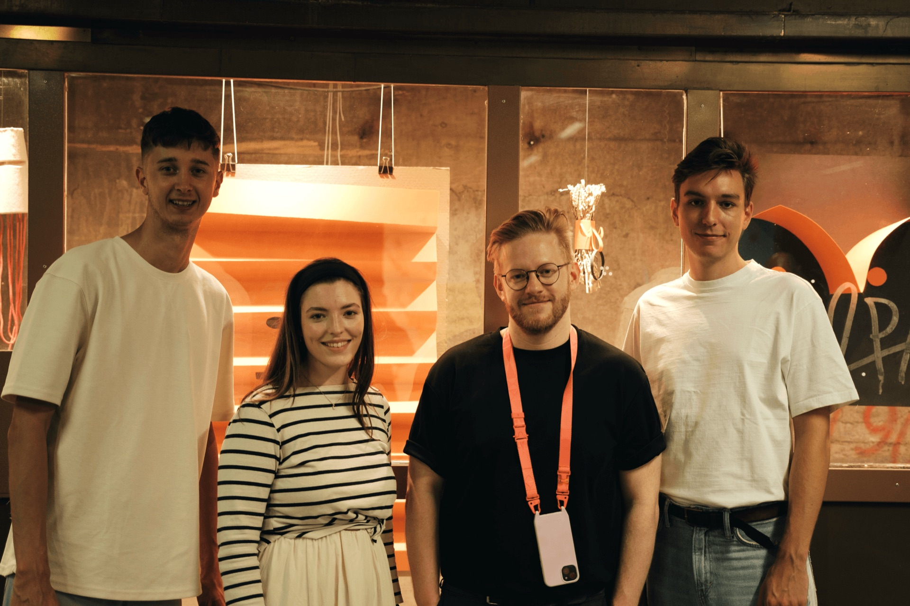
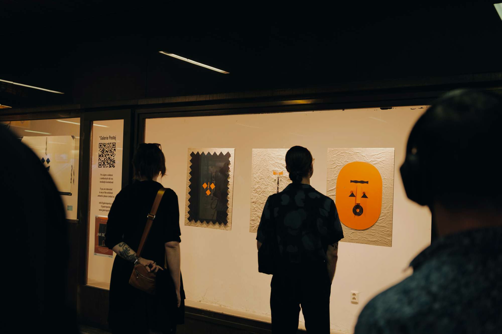
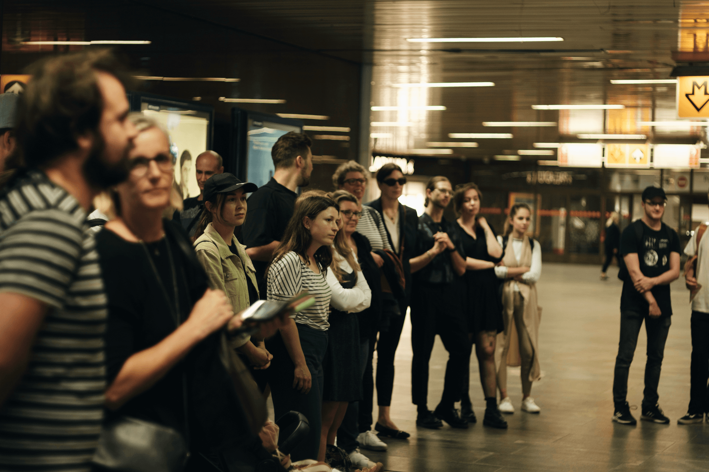
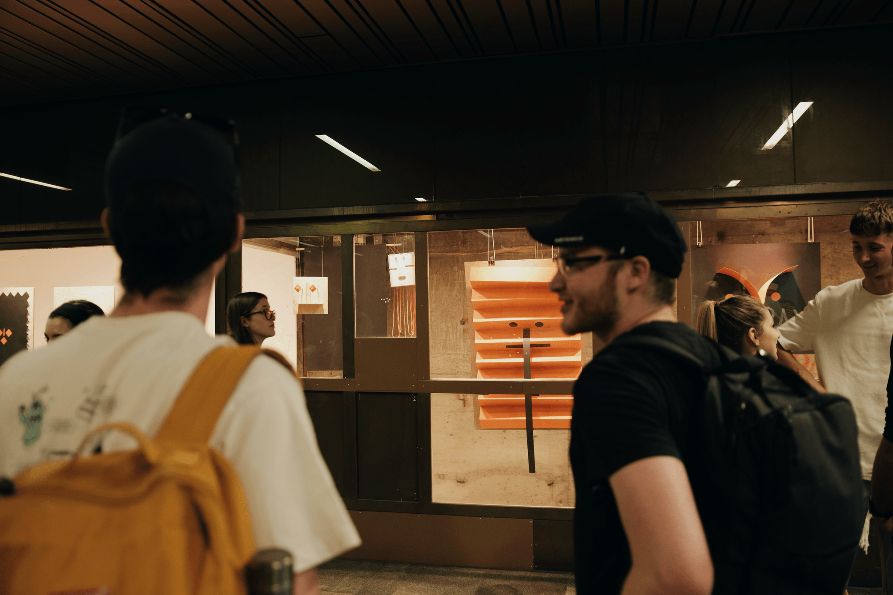
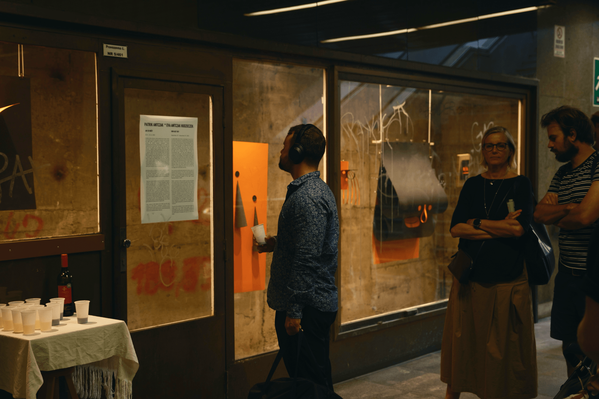

Anina Menger's exhibition brought a piece of the Middle East directly to Prague. Works created from scraps of fabric found in the streets of Tel Aviv or pebbles from a local beach presented tangible fragments of Israeli landscape and culture.
Tel Aviv fascinated Anina with its contrasts — a modern city of glass and concrete intertwined with the winding lanes of the ancient port of Jaffa. The diversity of the local people, religions, and everyday bustle was reflected in her work, which encompasses painting, drawing, lithography, and sewing.
On show at POSTOJ gallery were large-format canvases created in the summer of 2024, a sewn image of a man in a garden, a plaster hanging sculpture bearing attributes of sunny Tel Aviv, and a representative of the Holidays That Didn't Happen series from 2020. A painting of the Hassan Bek Mosque recalled the transformations of the urban landscape, where modern development has gradually replaced the original Muslim quarter.
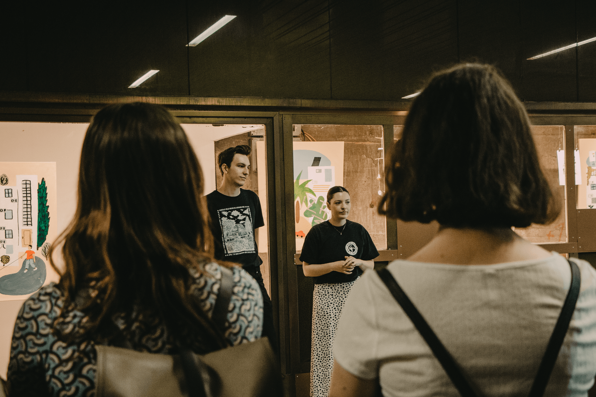
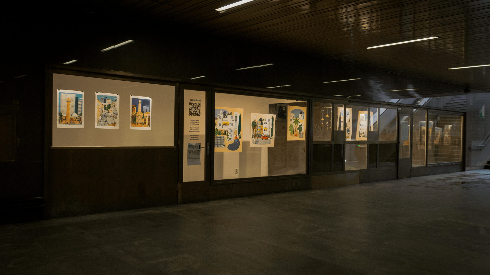
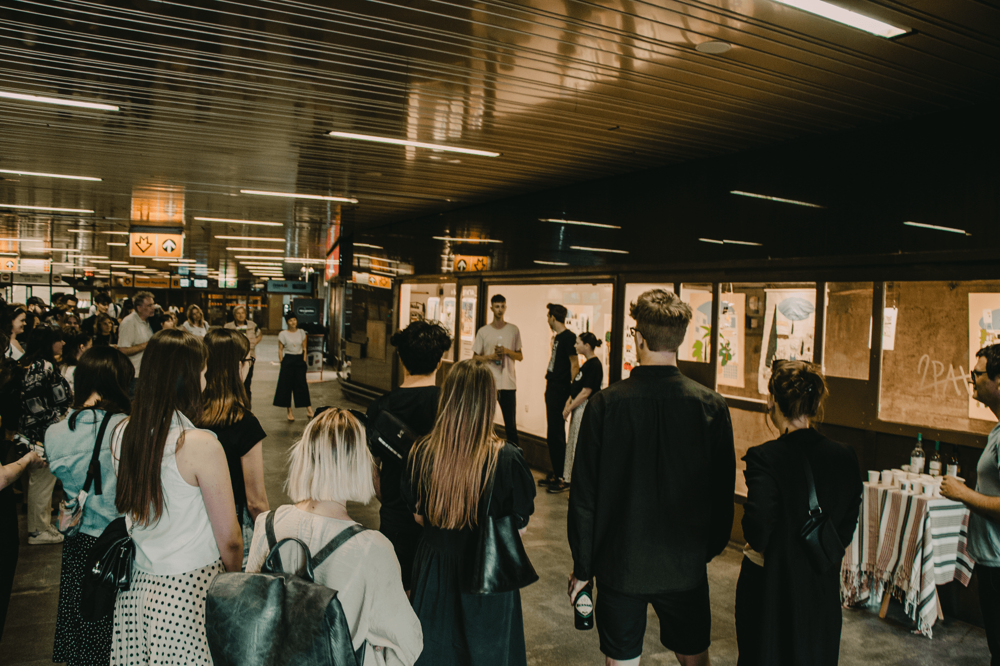
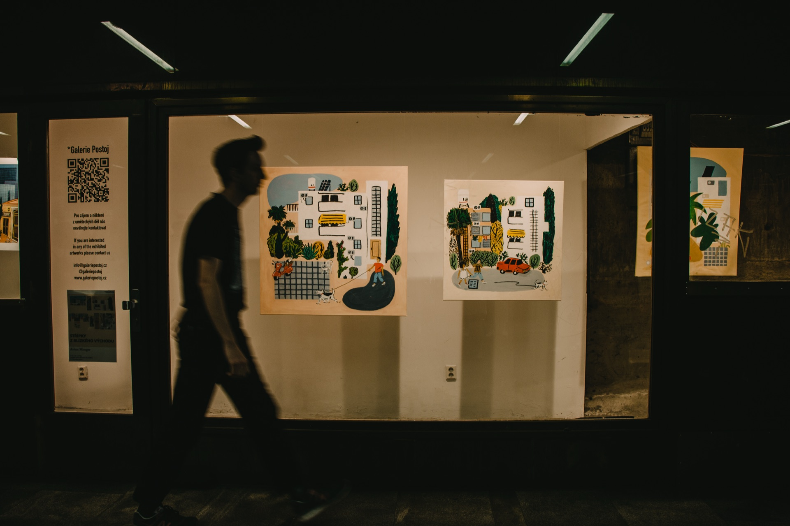
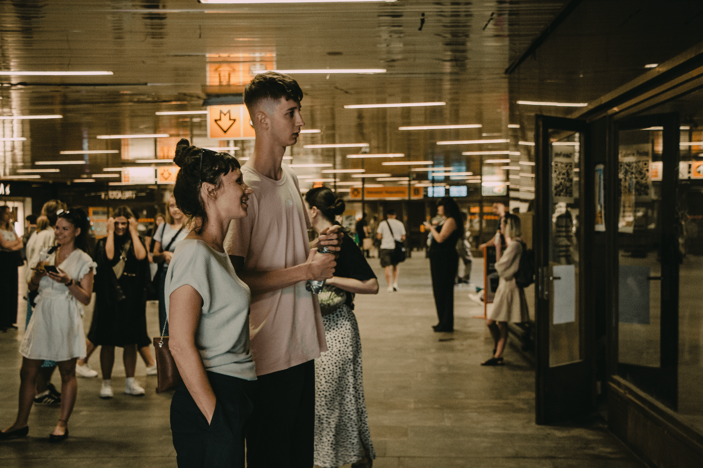

Dřeváky a medový klobouk (Clogs and a Honey Hat) was the title of an exhibition joining two artists, Helena Ticháčková and Adéla Valchařová. Both addressed the experience of journeying in their work.
Their work reflected the experience of travel as something that shapes, exhausts, and inspires in equal measure — walking through pleasant places and through painful ones, searching for shelter and a roof over your head. The exhibition's title was a metaphor for the journey itself, which is physically demanding and sometimes painful, yet dreamy in thought and determined to reach its destination despite all hardships. Clogs — heavy, firmly rooted to the ground. A honey hat — light, dreamy, aimed somewhere up in the clouds. It was in this tension between weight and longing that the whole exhibition unfolded.
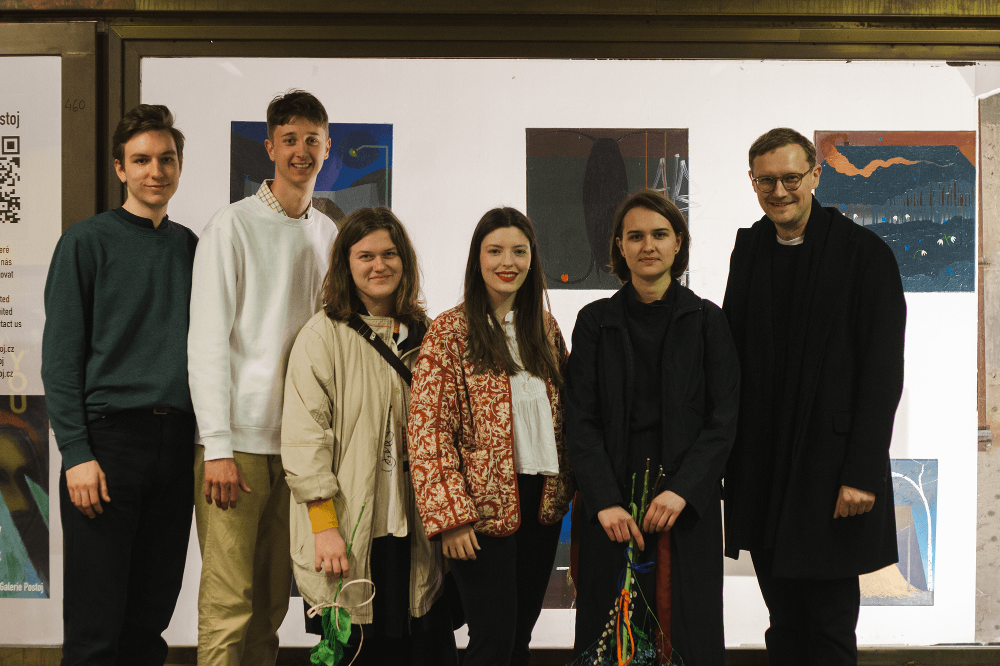
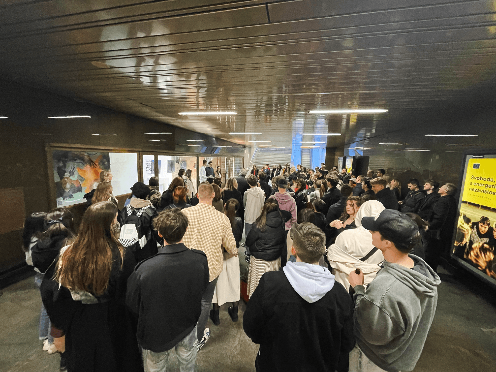
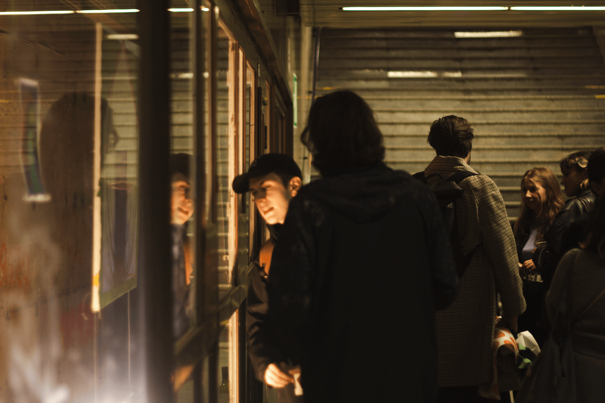
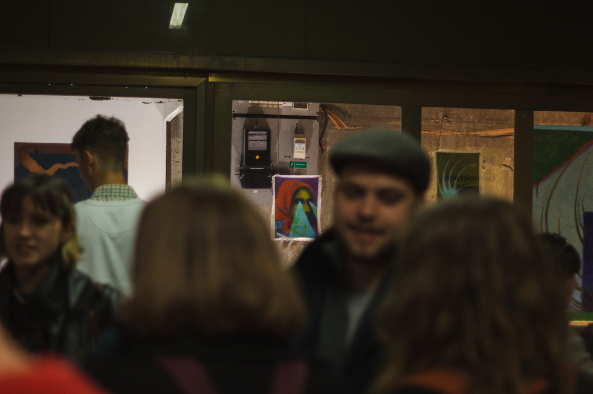
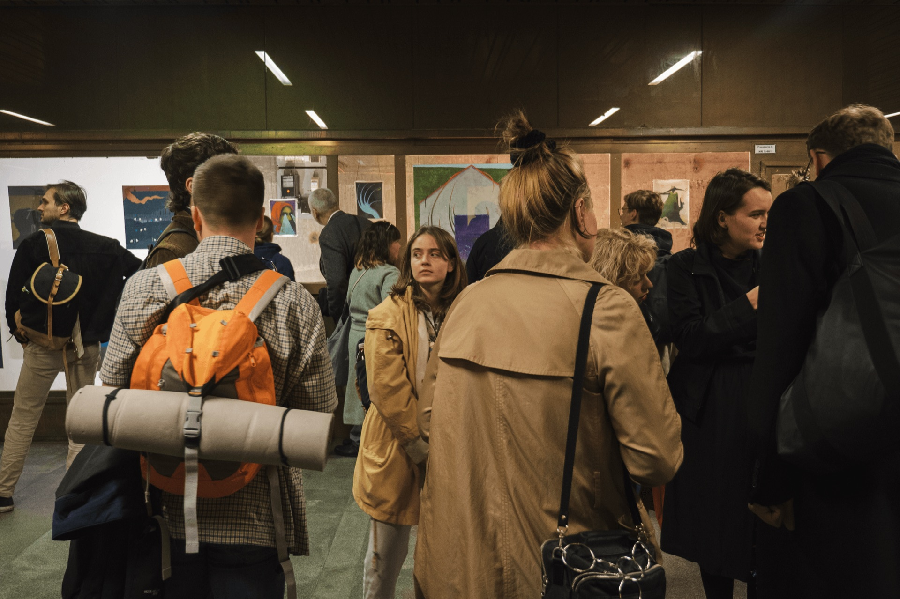